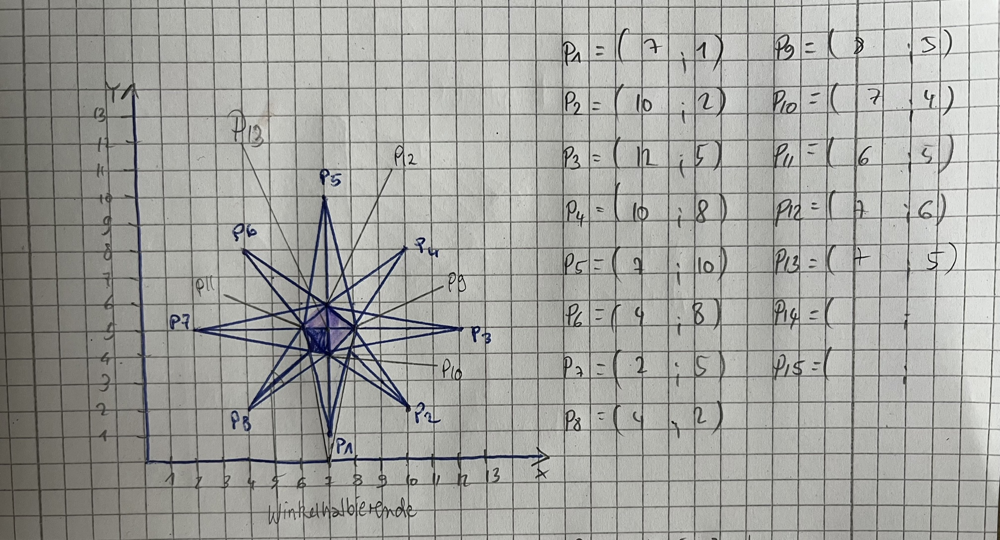
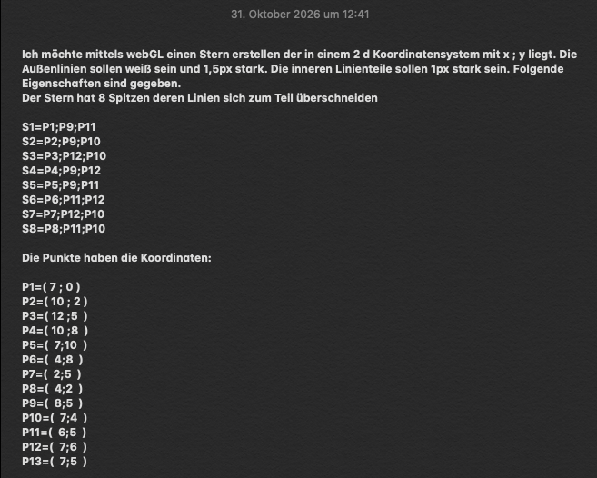
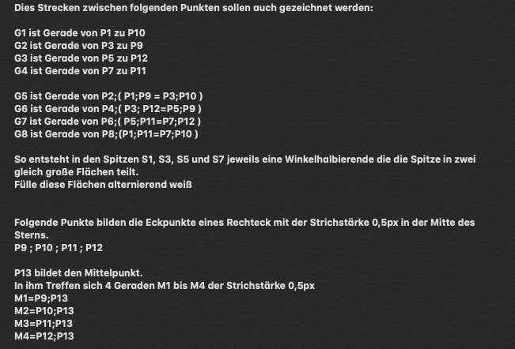
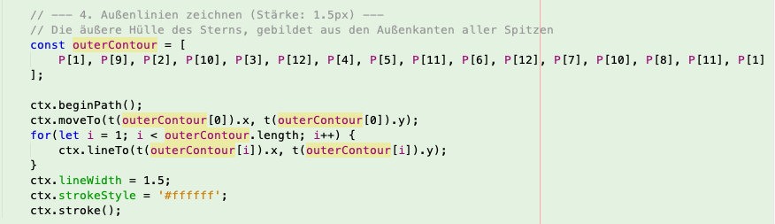
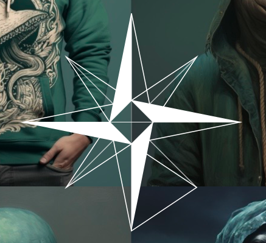
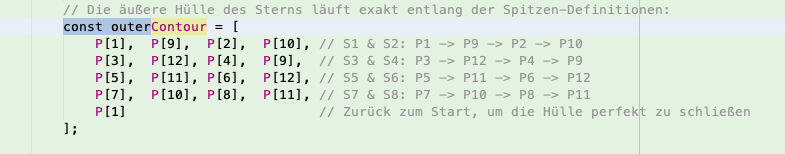
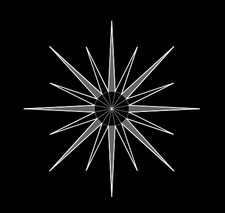
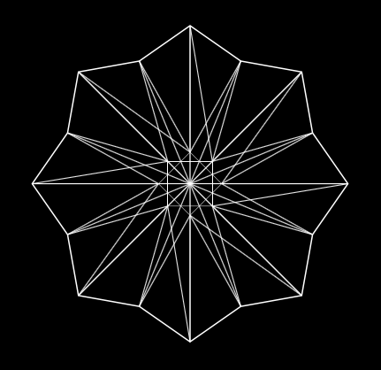
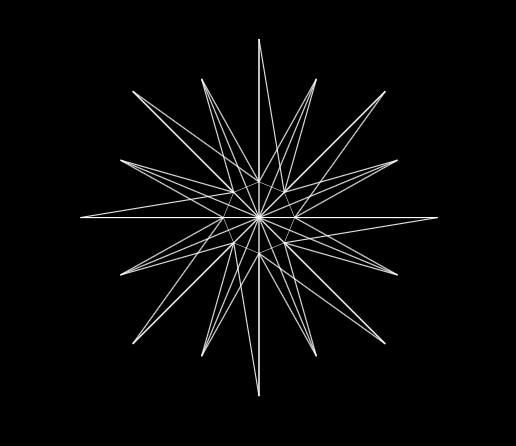
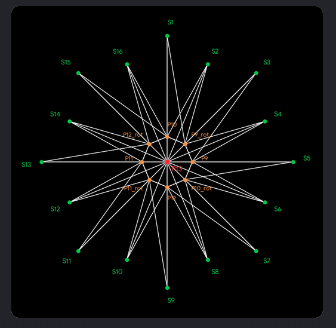

besteht aus 16 Strahlen aka Spitzen und einem im Zentrum gelegenem 8-Eck. Angefangen habe ich mit der hälfte der Punkte, wie du unten in der Doku sehen kannst, um zu verstehen wie der Code aufgebaut wird. Im wesentlichen wird in einem Array die Liste der Punkte erstellt, die der Reihe nach (ctx.beginPath();)abgelaufen wird und zwischen denen eine Kontur erzeugt wird. Eine Anwendung von Sinus/Cosinus ist nicht nötig.
Um einen Stern zu erstellen habe ich eine Skizze angefertigt und die Koordinaten ermittelt.



Hier gab es im ersten Durchlauf einen Fehlen.

im Array waren die Punkte für die Spitze S4 inkorrekt.

Nach der Korrektur des Arrays war alles gut und die Methode ctx.stroke() kann den Pfad Punkt für Punkt richtig abgelaufen und erzeugen.

Erweiterung der Form - erhöhte Komplexitat unter zur Hilfenahme von Sinus fürt zu einem nicht erwünschten Ergebnis

Statt eine Sinus-Funktion zu beanspruchen, wird nun zuerst das innere Rechteck dahingehend modufiziert, dass zwei Qudrate die an der selben Position liegen um 45 grad zueinander gedreht werden. Dann die räumlich nächstliegenden Punkte durch eine äußere Kontur miteinander verbinden und nach dem Schema der ersten Aufgabe abwechselnd die Eckpunkte des Achtecks mit den äußeren Punkten der Spitzen verbinden bzw. deren Schnittpunkte verwenden und an die Winkelhalbierenden denken.

Wir verzichten auf die linien, die die äußeren Eckpunkte direckt miteinander verbinden. Die Vorgabe, dass die sich am nächsten liegenden Punkte verbunden werden sollen, gilt nur für das innere 8-Eck. Und in dem Achteck bitte nur die Linien einblenden, die durch den Mittelpunkt(P13) laufen und die sich gegebüberliegenden Eckpunkte des 8-Ecks miteinander verbinden.

Fast geschafft. Nun noch die fehlenden Linien im Code nachziehen S9 nach P10_rot, S7 nach P9, S5 nach P9_rot, S3 nach P10, S1 nach P12_rot, S15 nach P11, S13 nach P11_rot
